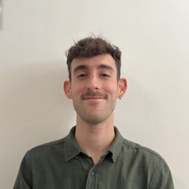

Omer Karin's research group, Department of Mathematics, Imperial College London
We develop mathematical models to understand biological mechanisms.
Living systems work very differently from human-made machines. A cell's most important decisions, such as when to divide or what type of cell to become, emerge from noisy interactions between many kinds of molecules. How does biological function arise from these interactions? We believe answering this question requires new mathematical theory, which we build on ideas from statistical physics, nonlinear dynamics, computation and beyond. We analyse experimental data and collaborate closely with experimentalists to develop and test our models.
Publications
Publications are also listed on my Google Scholar page. The coloured letters mark research themes.
- MSystems Medicine
- BBiological Navigation
- IImmunology
- DStem Cells and Development
- EEvolution
- NNeurobiology
- HEndocrinology
- GEpigenetics
- SAgeing
- LLearning in Biological Systems
- AAttractor Networks
- TInteracting Tipping Points
2026
- Compositional proofreading through critical self-tuningPhysical Review Letters (accepted)
- Self-organized hyperuniformity in a minimal model of population dynamicsPhysical Review Letters
- Growth rate-dependent mutations and phenotypic switching facilitate rapid adaptationnpj Systems Biology and Applications
- Learning principle for the adaptive shaping of epigenetic memory repertoiresPRX Life
- Cell cycle criticality as a mechanism for robust cell population controlMolecular Systems Biology
2025
- Unifying regulatory motifs in endocrine circuitsNature Communications
- Mathematical framework for hierarchical cell identity control by collective enhancer dynamicsPRX Life
- Bridging physics and aging biology: insights from the first Physics in Aging Biology workshopAging Biology
2024
- EnhancerNet: a predictive model of cell identity dynamics through enhancer selectionDevelopment
- Tuning of plasma cell lifespan by competition explains the longevity and heterogeneity of antibody persistenceImmunity
2023
- Major depressive disorder and bistability in an HPA-CNS toggle switchPLOS Computational Biology
- Perspectives on adaptive dynamical systemsChaos
- Damage dynamics and the role of chance in the timing of E. coli cell deathNature Communications
- Rules for body fat interventions based on an operating point mechanismiScience
- Epigenetic inheritance of gene silencing is maintained by a self-tuning mechanism based on resource competitionCell Systems
2022
- Dynamics of thyroid diseases and thyroid-axis gland massesMolecular Systems Biology
- The dopamine circuit as a reward-taxis navigation systemPLOS Computational Biology
- Controls for phylogeny and robust analysis in Pareto task inferenceMolecular Biology and Evolution
2021
- Temporal fluctuations in chemotaxis gain implement a simulated-tempering strategy for efficient navigation in complex environmentsiScience
- An opponent process for alcohol addiction based on changes in endocrine gland massiScience
- Senescent cells and the incidence of age-related diseasesAging Cell
- Hormone seasonality in medical records suggests circannual endocrine circuitsProceedings of the National Academy of Sciences
- Senescent cell accumulation mechanisms inferred from parabiosisGeroScience
2020
- A new model for the HPA axis explains dysregulation of stress hormones on the timescale of weeksMolecular Systems Biology
- Adaptive cyclic exit strategies from lockdown to suppress COVID-19 and allow economic activitymedRxiv (preprint)
2019
- Senescent cell turnover slows with age providing an explanation for the Gompertz lawNature Communications
2017
- Dynamic proteomics of herpes simplex virus infectionmBio
- Biphasic response as a mechanism against mutant takeover in tissue homeostasis circuitsMolecular Systems Biology
2016
- Dynamical compensation in physiological circuitsMolecular Systems Biology
Group
Omer Karin
PI, Associate Professor of Biomathematics
Becky Morgan
PhD Student

Matias Palumbo
PhD Student (co-supervised with Vicki Metzis)
Lanya Sabah
PhD Student (co-supervised with J Krishnan)
Alumni
- Anton Grishechkin · PhD Student
Join the group
Postdoctoral researchers
Chapman Fellowship in Applied Mathematics
A 3-year independent postdoctoral fellowship in the Department of Mathematics, starting September 2027. Closes 29 October 2026. About the Chapman Fellowships.
I am also happy to support applications for external fellowships, such as the EMBO Postdoctoral Fellowships (open year-round; next cutoff 22 January 2027), Marie Skłodowska-Curie and HFSP. Please get in touch to discuss potential projects.
PhD students
Competitive funding is available for PhD positions starting in 2027. If you're thinking about joining my group, it's a good idea to reach out early. Please contact me with your CV and a short summary of your interests to chat about possible projects.
Applications to the Mathematics PhD programme open in October. Applicants who apply by 2 November 2026 are considered in the first round of the President's PhD Scholarships.
Undergraduate and Masters students
I welcome applications from Imperial students for M3R, M4R, MSc, and UROP research projects. If you are interested, please get in touch to discuss potential opportunities.
Contact
My group is based in the Department of Mathematics, Imperial College London, UK.
Location
6M12 Huxley Building
South Kensington Campus
London SW7 2AZ, UK
o.karin [at] imperial.ac.uk